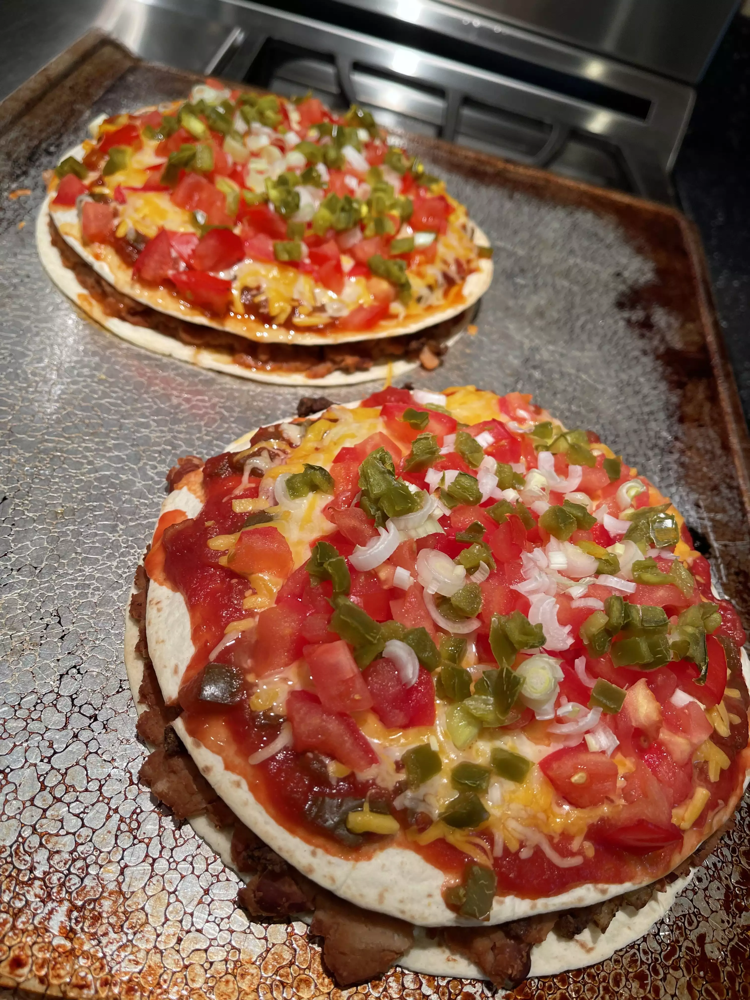

Mexican Pizza

Description
This Mexican pizza recipe layers delicious seasoned ground beef and refried bean between two crisp tortillas. Top with salsa, cheese, tomatoes and jalapeño for incredible flavor in every bite!
Prep time: 20mins
Cook time: 25mins
Servings: 8
Ingredients
- 1/2 pound of ground beef
- 1 medium onion, diced
- 1 clove of garlic, minced
- 1 tablespoon of chili powder
- 1 teaspoon of ground cumin
- 1/2 teaspoon of paprika
- 1/2 teaspoon of salt
- 1/2 teaspoon of black pepper
- 1 can of refried beans
- 4 flour tortillas
- 1/2 cup of salsa
- 1 cup of shredded cheddar cheese
- 1 cup of shredded Monterey Jack cheese
- 2 green onions, chopped
- 2 tomatoes, diced
- 1/4 cup thinly sliced jalapeño pepper
- 1/4 cup of sour cream
`
Steps
- Preheat the oven to 175 degrees celsius. Coat 2 pie plates with non-stick cooking spray.
- Place ground beef, onion and garlic in a skillet over medium heat. Cook until beef is evenly browned and crumbly, 5 to 7 minutes. Drain and discard greese. Season beed with chili powder, cumin, praprika, salt and pepper.
- Lay one tortilla in each pie plate and cover with a layer of refried beans. Spread 1/2 of the seasoned ground beef over each one, and then cover with a second tortilla are crisp, about 10 minutes.
- Remove pizzas from the oven and set aside to cool slightly. Then spread 1/2 of the salsa over each top tortilla. Cover each pizza with 1/2 of the cheddar and monterey jack cheeses. Place 1/2 of the tomatoes, 1/2 of the green onions and 1/2 of the jalapeño slices onto each one.
- Return pizzas to the oven and bake until cheese is melted, Return pizzas to the oven and bake until cheese is melted, about 5 to 10 minutes. Let pizzas cool slightly before slicing each one into 4 pieces.